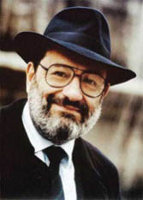

(1932 – )

Günümüzün en önemli yazarlarından ve entelektüellerinden biri kabul edilen Umberto Eco, bir yandan akademik yönü ağır basan kitaplar yazarken bir yandan da popüler kitaplar yazarak şöhretin tadını çıkarmaktadır.
Umberto Eco (okunuşu: Umberto Eko) 5 Ocak 1932 günü İtalya'nın Piedmont bölgesinde, Alessandria kentinde doğdu. Babası Giulio muhasebeciydi; ama II. Dünya Savaşı'na katılmak zorunda kalınca Umberto ve annesi Giovanna, dağ eteklerindeki küçük bir köye sığındı. Babası on üç çocuklu bir ailede, büyük zorluklarla büyüdüğü için oğlunun avukat olup rahat etmesini istiyordu, ama Umberto Eco, Torino Üniversitesi'nde Ortaçağ Felsefesi ve edebiyatı okumaya başladı. Yüksek lisans ve doktora çalışmalarını, "Aquinolu Thomas akımı" ve bu akımın estetik anlayışı üzerine yaptı. 1956-64 yılları arasında yazar, bir yandan İtalyan devlet televizyonu RAI'de kültür-sanat programları yaparken bir yandan da Torino Üniversitesi'nde ders veriyordu. O yıllarda tanıştığı ve çalıştığı, kendilerine "Grup 63" adı verilen bir grup ressam, müzisyen ve yazarın Eco'nun sonraki yazarlık kariyeri üzerinde büyük etkisi oldu. İlk kitabı Aquinolu Thomas Estetiğinin Sorunu, 1956 yılında yayımlandı. Eylül 1962'de, sanat öğretmeni olan Alman Renate Ramge ile evlendi ve çiftin bir kızı, bir de oğlu oldu.
Dünya kamuoyunun gündemine Gülün Adı ve Foucault Sarkacı gibi romanlarıyla giren İtalyan yazar, Ortaçağ Estetiği ve Göstergebilim dalının ustalarındandır. Eco, 1971'den bu yana Bologna Üniversitesi'nde profesör olarak çalışmaktadır ve yapısalcılık sonrası göstergebilimin gelişmesine önemli katkılarıyla tanınmaktadır. Tarihçi, filozof, Ortaçağ uzmanı, eleştirmen ve James Joyce üzerine derin araştırmalar yapmış bir yazardır. Eco'nun ilk romanı Gülün Adı, 1980'de yayımlandı. 1962'de Torino Üniversitesi'nde doçent, 1969'da ise Floransa Üniversitesi'nde görsel iletişim dalında profesör oldu. 1971'de Bologna Üniversitesi'ne geçti ve 1975 yılında bu üniversitenin Gösteri ve İletişim Bilimleri Enstitüsü'nün başına getirildi.
Eco'nun çalışmaları 1960'ların ortasından itibaren avant-garde (öncü) yapıtlara ve kitle kültürüne yönelmiştir. Son dönemlerde ise güncel olay ve olguları da ele alan çalışmalar yapmaktadır. Bu çalışmalar arasında edebiyat eleştirileri, tarih ve iletişim yazıları önemli bir yer tutmaktadır. Eco, özellikle tarih bilgisiyle süslediği eserlerinde tam bir ustalık gösterir. Özellikle Baudolino adlı eserinde, Bizans ve IV. Haçlı Seferi hakkındaki anlatılar sürükleyicidir.
Roland Barthes'tan sonra, "ayrıntıların anlamı" ya da "ayrıntıların sosyolojisi" adı verilen bir anlayışın önemli köşe taşlarından birisi olan Umberto Eco'nun pek çok eseri Türkiye'de de yayımlandı. Yazar, günlerini Milano'daki evi ve Rimini'deki yazlığı arasında mekik dokuyarak geçirmekte ve Milano'daki evinde 30.000, yazlığında ise 20.000 cilt kitap sahibi olmakla her zaman övünmektedir.
Seçme Romanları: Gülün Adı (Can Yayınları, 1986), Alımlama Göstergebilimi (Düzlem Yayınları, 1991), Foucault Sarkacı (Can Yayınları, 1992), Günlük Yaşam'dan Sanata (Adam Yayıncılık, 1993), Önceki Günün Adası (Can Yayınları, 1995), Anlatı Ormanlarında Altı Gezinti (Can Yayınları, 1995), Avrupa Kültüründe Kusursuz Dil Arayışı (Afa Yayınları, 1995), Ortaçağı Düşlemek (Can Yayınları, 1996), Yorum ve Aşırı Yorum (Can Yayınları, 1996), Somon Balığıyla Yolculuk (Can Yayınları, 1997), Yanlış Okumalar (Can Yayınları, 1997), Beş Ahlak Yazısı (Can Yayınları, 1998), Ortaçağ Estetiğinde Sanat ve Güzellik (Can Yayınları, 1998), Açık Yapıt (Can Yayınları, 2001), Zamanların Sonu Üstüne Söyleşiler (Yapı Kredi Yayınları, 2001), Baudolino (Doğan Kitap, 2003), İnanç ya da İnançsızlık (1001 Kitap, 2005), Kraliçe Loana'nın Gizemli Alevi (Doğan Kitap, 2005), Cecü'nün Yer Cüceleri (Yapı Kredi Yayınları, 2006), Güzelliğin Tarihi (Doğan Kitap, 2006), Çirkinliğin Tarihi (Doğan Kitap, 2009), Kitaplardan Kurtulabileceğinizi Sanmayın (Umberto Eco ve Jean-Claude Carriere'in Sohbetleri) (Can Yayınları, 2010), Prag Mezarlığı (Doğan Kitap, İstanbul, 2012)
Aldığı Ödüller: 1981 Anghiari Ödülü; 1981 Strega Ödülü, 1981 Viareggio Ödülü, 1982 MacLuhan Teleglobe Ödülü, 1982 Medicis Ödülü